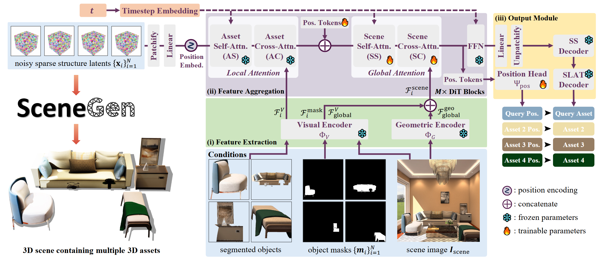

JOINT ASSET + LAYOUT GENERATION
先理解每件物体，再让整组物体互相“看见”。
SceneGen 借用 TRELLIS 的结构化 3D latent 作为资产生成骨架，同时加入全局注意力与位置 token。这样它不需要先去资产库检索家具、再单独优化摆放，而是在同一生成流程中联合推理资产与布局。
OFFICIAL ARCHITECTURE论文架构图

图中资产 token 经过局部与全局交互，位置 token 则汇总场景关系并预测每件物体的变换。
PIPELINE EXPLORER
五步看懂一次推理
RGB＋MASK × N
STEP 01图像与逐物体遮罩
DINOv2 提取视觉条件，VGGT 提供几何特征。多视图输入要求不同视图里的物体顺序一致；遮罩质量会直接影响后续资产边界。
OBJ AOBJ BOBJ C
STEP 02Local Attention：修好单件物体
每个物体 token 优先关注自己的图像和遮罩特征，生成稀疏结构与外观 latent，减少相邻物体视觉内容互相污染。
ABC
STEP 03Global Attention：让物体交换场景信息
所有物体 token 与场景条件共同交互，用“桌子靠近沙发、椅子朝向桌面”这类整体关系约束资产生成与布局。
XYZQUATS
STEP 04Position Tokens：预测相对变换
位置头为每件物体预测 3 维平移、4 维四元数旋转和 1 维统一尺度。训练时使用 pose Huber loss，并加入 voxel collision loss 抑制穿插。
GAUSSIAN→GLB
STEP 05网格化、UV 与纹理烘焙
解码网格与 Gaussian 外观，经过简化、补洞、xatlas UV、100 视角渲染与 1024 纹理优化后，把多件资产按预测变换组合为 GLB。
“ONE FEEDFORWARD PASS” 应该怎样理解？
它指资产和布局不再分成“检索资产 + 优化摆放”的两个独立系统；并不意味着瞬时完成。公开实现仍包含两段各 25 步的采样和较重的 GLB 纹理后处理。论文报告 A100 上一个 4 物体场景约 2 分钟。